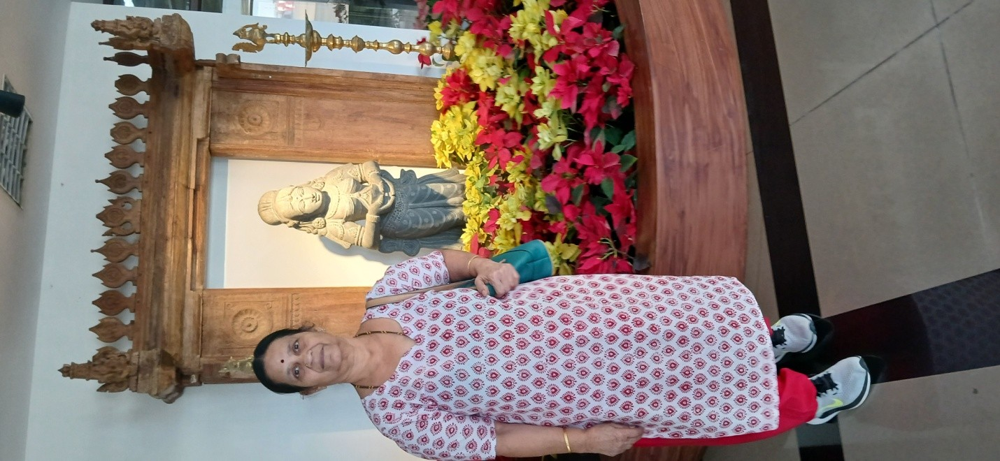
We left home at 7 am for International Airport T2 Mumbai by cab. Because of heavy traffic at Lonavala, we were stuck for 30 minutes. We reached the airport at 11:15 am.
All airport formalities were completed soon by using the special counter for senior citizens. Flight 6E490 to Thiruvananthapuram was on time. Travel duration was about 2 hours. We landed at Thiruvananthapuram airport at 4:30 pm.
Veena, the tour manager, was waiting for us at the airport. Then, by bus, we traveled about 20 minutes and reached Hotel Fort Manor. Fortunately, the bus was good. The tour manager provided the first seat for us.
After reaching the hotel, they provided coffee and biscuits. Our room was on the 9th floor. The room was good. We had dinner around 8 pm.
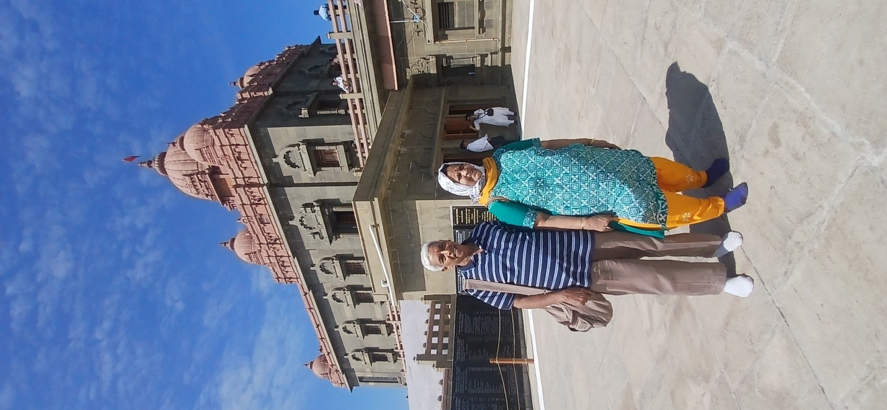
Morning got up early around 5:30 am. After the morning routine, around 7:30 am, we had our typical South Indian breakfast: Idli, dosa, vada, etc. We started moving to Kanyakumari by bus. The distance is around 90 km.
On the way to Kanyakumari, we had a coffee break at Kumaran Koil. We reached Kanyakumari around 11 am. First, we visited the Bagavathi Amman temple. The main deity of this temple is Devi Bagavathi Amman. The temple was not very crowded, and we had a nice darshan.
After the temple, we proceeded to Vivekananda Memorial Rock via a ferry. Because of the holiday, there was a student crowd, and we had to wait for the ferry. On the Vivekananda Memorial Rock, we saw his bronze statue and the meditation hall. Also, there is a belief that Parvathi's footprint appeared on this rock, and her footprints are kept on a silver plate. We saw that also.
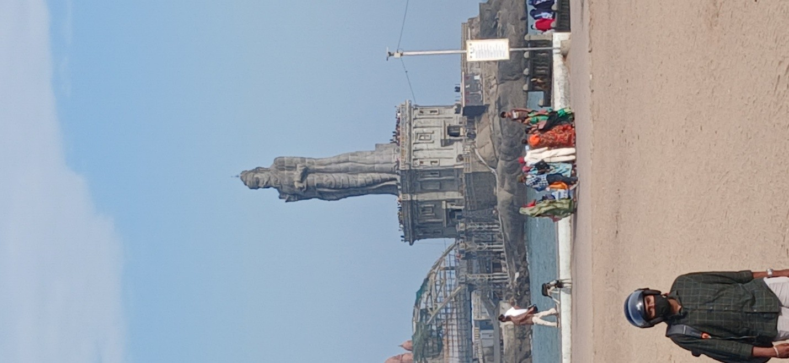
Then we went through the glass bridge and reached the Thiruvalluvar monument, where we saw his statue. Then we took the ferry again and reached the shore. We had our lunch, which was good. Then we went to Gandhi Mandap where his sacred cremation ashes were kept.
After Gandhi Mandap, we proceeded to Thiruveni Sangamam, the meeting point of three seas: the Arabian Sea, the Bay of Bengal, and the Indian Ocean. Then we drank coconut water and proceeded back to Thiruvananthapuram. We reached our hotel around 8:30 pm and had dinner.
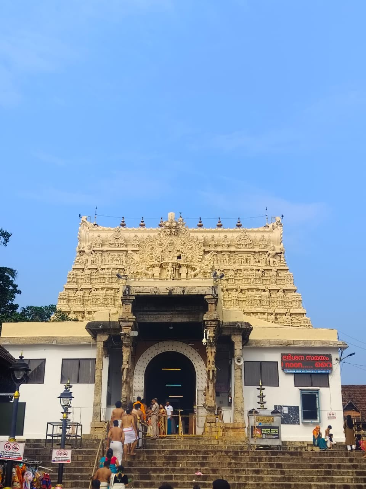
In the morning, we got up around 5:30 am and got ready to go to the Padmanabhaswamy Temple. After breakfast, we proceeded to the temple. Veena Travels arranged special darshan tickets for everyone, costing Rs 500 per head. We completed the darshan in an hour.
One common factor for all famous temples like Srirangam, Guruvayur, Tirupati, etc., is the exploitation of people who have immense faith in God. Devotees come to the temple to pray and to get some relief from their suffering. Actually, Pandits or temple authorities should console them without accepting any money, whereas the reality is that they exploit them in the name of God and grab their money. In our group, one lady was holding a Rs 200 note in her hand; it was forcefully taken by the Pandit of the temple. How sad it is.
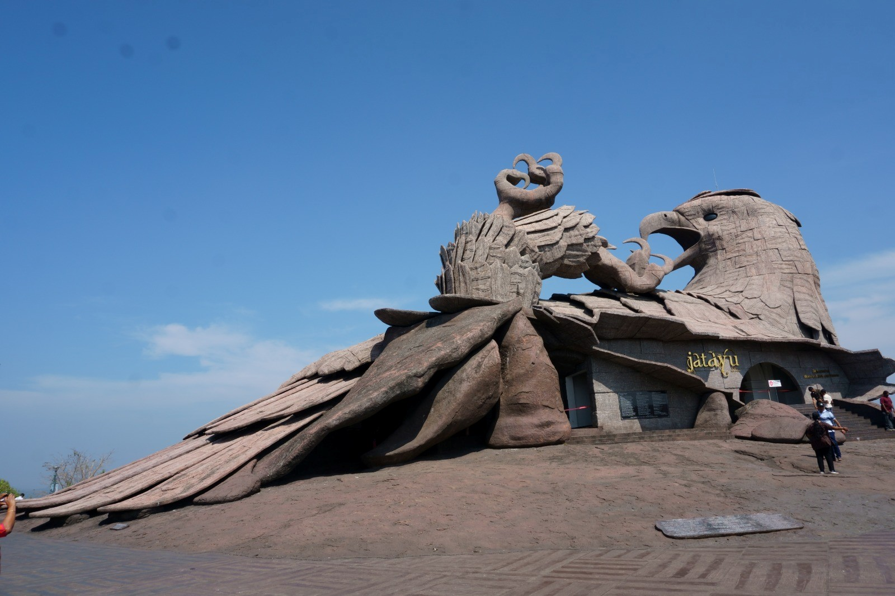
Then we proceeded to the Jatayu Earth Center. This place is some 100 km away from Thiruvananthapuram. Here, on a rock, the fight between Ravana and Jatayu is depicted in the form of a sculpture. It is believed that in this place, Jatayu sacrificed his life in the attempt to save Sita Devi from Ravana. We were to go by ropeway to the hilltop to see the sculpture.
Unfortunately, due to some technical snags, the operation of the rope car was suspended, so we couldn't visit this beautiful monument. From there, we proceeded to Alleppey and reached Hotel Lemon Tree around 7:15 pm.
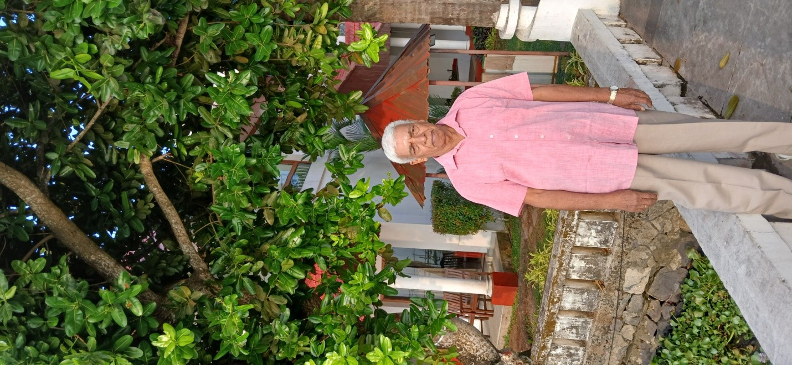
The Lemon Tree hotel stay was good. After taking breakfast, we proceeded to Raju Jetty for a backwater boat ride. This backwater boat ride lasted for about 1 hour and 30 minutes. Vembanad Lake is connected with this backwater channel. This is the biggest lake in Kerala.
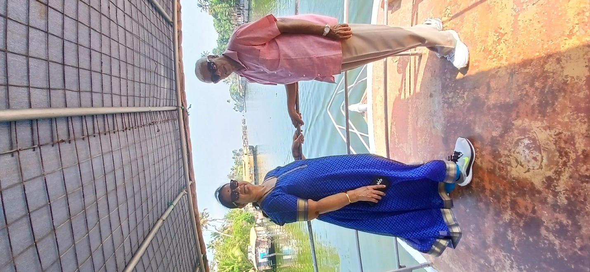
After the boat ride, we had our typical Kerala lunch: boiled rice, sambar, and some subjis. Then we proceeded to Periyar, about 150 km away. It is a ghat road; of course, the weather was good. Since the bus and the driver were good, the travel was comfortable. We reached Holiday Vista around 5:30 pm.
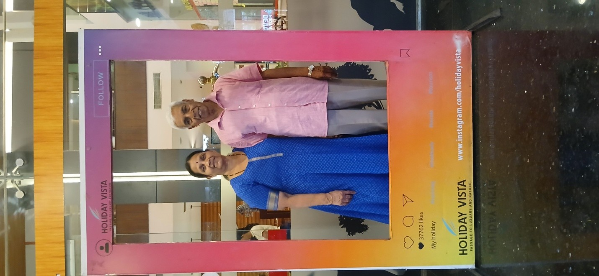
Then we walked to an auditorium to see Kathakali. The show was for an hour. After that, we saw Kalaripayattu. This show exhibits adventurous acts like fighting with swords, jumping through fire rings, etc. That show was for half an hour. After that, we walked back to the hotel.
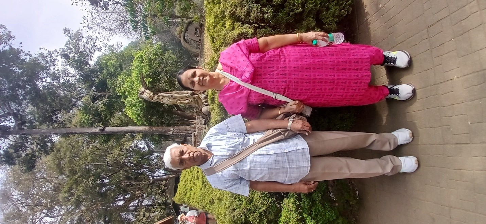
After breakfast, we left Holiday Vista hotel, Periyar, by 8:30 am and proceeded to visit the Wildlife Sanctuary. In our bus, we reached the spot where the wildlife sanctuary visit is arranged. This comes under the forest department. From this spot, we traveled in a forest department bus to the lake.
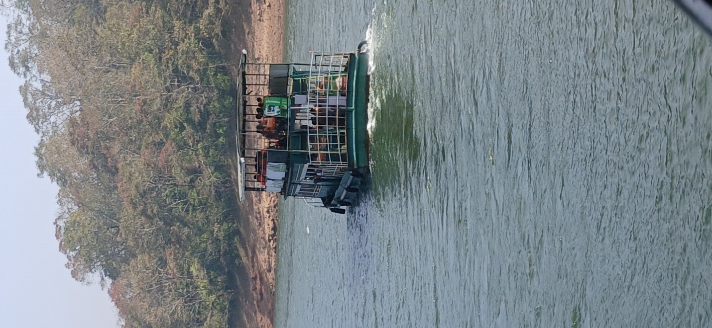
Then we boarded the ferry. We traveled on the upper deck. The journey was about one and a half hours. Excellent weather, a cold breeze, and beautiful greenery made the travel wonderful. We didn't see any wild animals or elephants. We saw only a few birds and some deer.
After lunch, we proceeded to Munnar. It is about a 5-hour journey. On the way to Munnar, we stopped at the Hindustan Ayurvedic Center. They took us to an Ayurvedic medicinal plants garden and explained Ayurvedic medicines for BP, diabetes, thyroid, etc. Our group members bought various medicinal oils for thousands of rupees. Around 6 pm, we had a coffee break. By 8 pm, we reached Hotel Silver Point, Munnar. This is a hill station and the weather was quite chill.
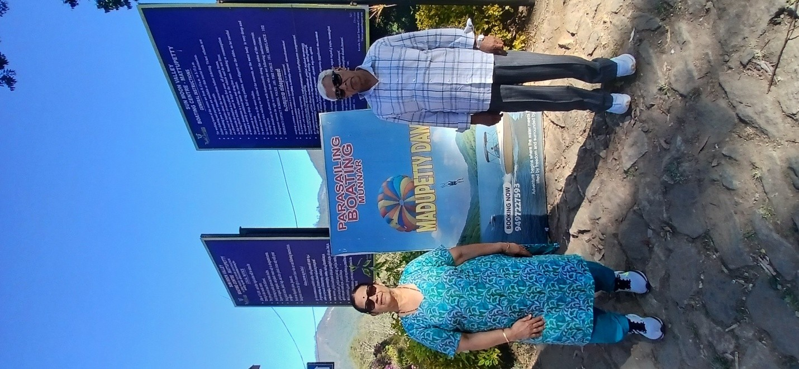
Silver Point hotel is converted from a movie theater. The proprietor of this hotel must be a big movie fan. All rooms have movie names like Titanic, Chennai Express, etc. The dining hall's name is Maya Bazaar. Inside the hall, big portraits of scenes from that movie are mounted on the wall. Portraits of Sivaji Ganesan and MGR are seen in the main hall.
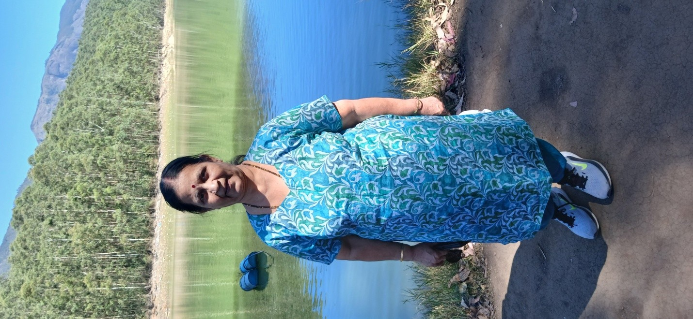
After breakfast, we proceeded to Mattupetty Dam. It is about a 30-minute drive from the hotel. On that lake, speed boat rides were arranged. It was a good experience. Then we went to Echo Point. This place is on the shore of the lake. On the opposite side, paper trees and eucalyptus trees are planted. Whatever we shout, it echoes back. We also shouted loudly and tested it; it was interesting.
After Echo Point, we had mirchi bajji and masala tea from a roadside shop. After that, we returned to the hotel and had our lunch. The afternoon schedule was to visit a tea garden and a tea factory.
After lunch, we traveled to the Kannan Devan tea factory. They explained the process from plucking tea leaves to the final product. Also, in their outlet, they sell white tea, green tea, etc.
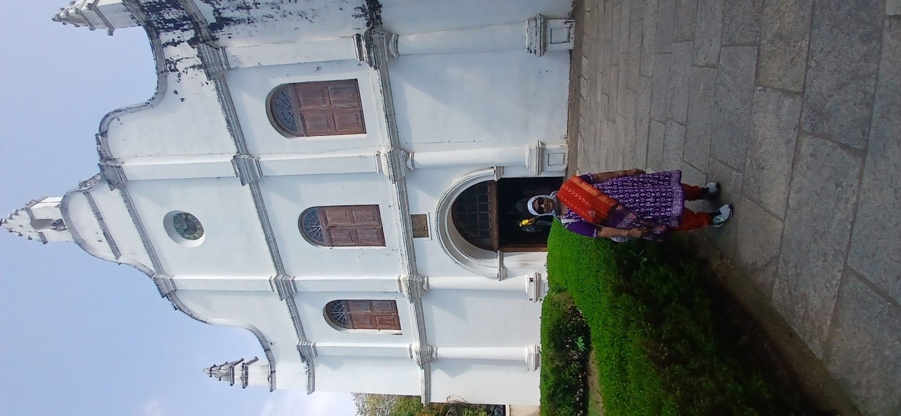
We left Silver Point hotel, Munnar, early around 8 am. After some 2 hours of travel, we had a coffee break. Around 1 pm, we reached Kochi. After lunch, first we visited St. Francis Church.
St. Francis Church is the oldest church, located on Mattancherry Island. This church was built during the East India Company's time. In 1502, Vasco da Gama came to this place; he died in 1524, and his body was buried in this church. Subsequently, his son came here and took the remains of that body back to his country.
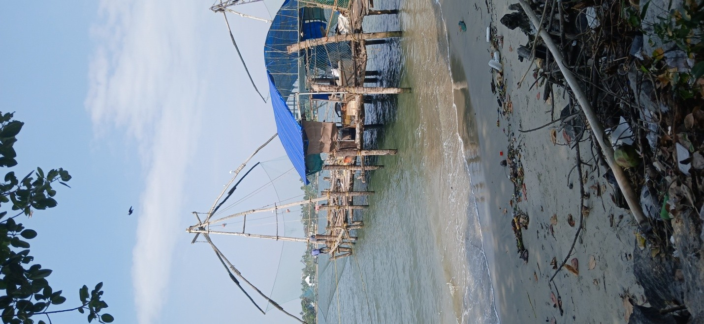
Next, we visited the Chinese fishing nets. This is a very old technology for catching fish. The fishing net is attached to a wooden structure, and by a lever arrangement, the big fishing net is moved into the deep sea. After a while, using the lever mechanism, it is lifted back, and the fish are collected from the net. We watched one cycle with great curiosity. We were keenly watching while they lifted the net. To our utter surprise, not a single fish was caught.
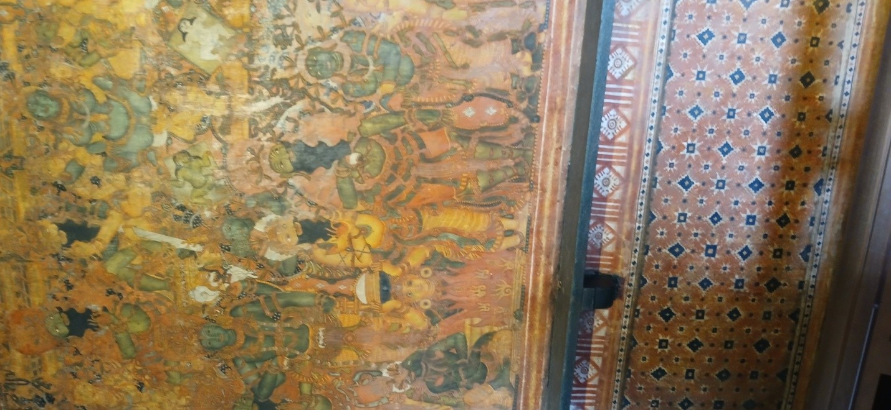
Then we proceeded to the Dutch Palace. It was built in the 16th century by the Portuguese, a blend of European and Kerala architecture. It is a two-story building built for the Raja of Kochi. Inside this palace, paintings are seen depicting scenes from the Ramayana and Mahabharata. The ceiling is decorated with wooden structures.
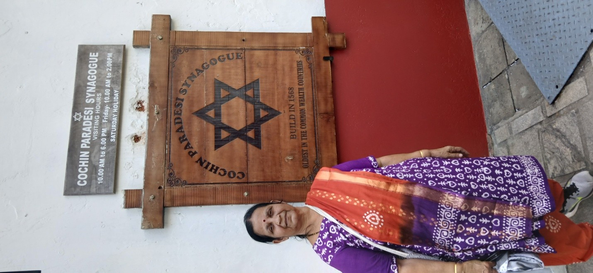
Our last sightseeing place was the Paradesi Synagogue. It is located in Jew Town, Mattancherry Island, Kochi. It was built in 1568 for Jews who came to India from Spain and Portugal. Fourteen families initially came here; still, a few Jewish families are staying here, and this place is now their place of prayer. Here we can see the beautiful Belgian chandeliers decorating the main hall. After this, we reached Hotel Ginger on MG Road, Kochi, around 7 pm.
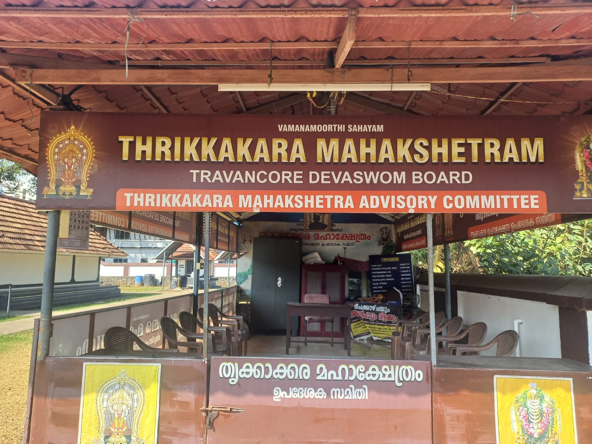
Today is the last day of the tour. We had our breakfast around 8:30 am. Since there was no other program, we went to the Thrikkakara Vamanamoorthy Temple. It is one of the 108 Divya Desam temples (the 63rd Divya Desam). In this temple, Perumal took the avatar of Vamanamoorthy and kept his feet on Mahabali Chakravarthy's head. Here, Onam is celebrated in a grand manner.
The main deity is Vamana, and there are Shiva, Lord Ganesh, Lord Murugan, and Parvathi Devi deities. This temple is about 10 km away from MG Road, Kochi. After the temple visit, we vacated our room and had our lunch. After lunch, some went shopping.
At last, we left the hotel around 5 pm and proceeded to the airport. On the way, we stopped at a banana chips shop. Freshly prepared chips and other Kerala items like coconut oil and masala were sold there. We also bought chips and coconut oil. After dinner at Surya Hotel, we reached the airport around 9 pm. All airport formalities were done without any hassle. The Indigo flight took off on time at 11:20 pm.
After reaching close to Mumbai, the pilot announced that due to traffic, landing would be delayed. After a delay of 30 minutes, it landed and again stopped at the end of the runway. Again, the pilot stated that a parking slot had not been allocated. After 20 minutes, the plane started to move and reached the right slot. So, instead of 1:30 am, we reached Mumbai around 3 am. We got a cab and arrived home around 7 am.
This eight-day journey across God's Own Country provided a rich tapestry of experiences—from the spiritual heights of Kanyakumari and Thrikkakara to the serene backwaters of Alleppey and the misty hills of Munnar. Despite minor setbacks like the Jatayu ropeway and Mumbai's airport traffic, the journey was defined by comfortable travel, excellent weather, and the vibrant culture of Kerala. A memorable chapter in a lifetime of travels.